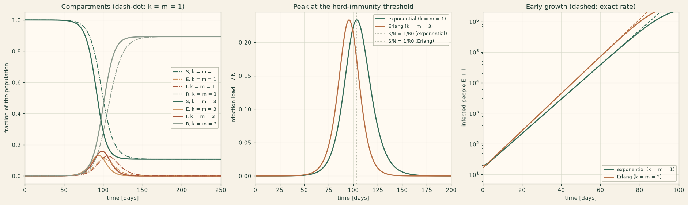

Docs › Examples › SEIR epidemic with Erlang stages
Epidemiology · 0D
SEIR epidemic with Erlang stages
An SEIR epidemic with R0 = 2.5 in a population of ten million, with exponential and with Erlang-distributed latent and infectious periods.
Run locally with OneSimulation. The example downloads are free. Running them requires an activated runtime. Runtime Alpha 0.2.1a7 · CPython 3.13 on macOS (Apple Silicon), Ubuntu 22.04 (x86-64), and Windows x64. Installation and activation · View pilot plans. Scope of the reference checks.

What it computes
OneSimulation builds the compartment model as a signal-flow graph, one integrator per compartment and stage, and integrates it with the classical fourth-order Runge-Kutta method; the stage number is a parameter of the graph.
What it checks
For both models the early growth rate (0.1294 and 0.1396 per day) matches the exact Lotka-Euler root within 0.1 %, the infection load peaks at S/N = 0.400 = 1/R0 within 0.0005, and the final size 0.8926 matches the final-size relation to four digits.
The notebook
The complete notebook, cell by cell. Run it to produce the figures and the comparison printout.
A population of \(N\) people is divided into susceptible \(S\), exposed (infected but not yet infectious) \(E\), infectious \(I\) and removed \(R\). Contacts with infectious people infect susceptibles at the rate \(\beta S I/N\); the latent period lasts on average \(1/\sigma\) and the infectious period \(1/\gamma\). In the classical SEIR model both periods are exponentially distributed, which overstates very short and very long stays. Splitting \(E\) into \(k\) and \(I\) into \(m\) consecutive compartments gives Erlang-distributed periods with the same means and a more realistic shape:
OneSimulation builds the model as a signal-flow graph: one integrator per compartment, weighted sums for the stage transfers and one block for the infection term. The graph is integrated with the classical fourth-order Runge-Kutta method.
Reference. H. J. Wearing, P. Rohani and M. J. Keeling, Appropriate models for the management of infectious diseases, PLoS Medicine 2, e174 (2005); O. Diekmann, H. Heesterbeek and T. Britton, Mathematical Tools for Understanding Infectious Disease Dynamics, Princeton 2013. With the basic reproduction number \(R_0=\beta/\gamma\):
- the early exponential growth rate \(r\) solves \(\dfrac{r}{\gamma}\left(1+\dfrac{r}{k\sigma}\right)^k\Big/\left[1-\left(1+\dfrac{r}{m\gamma}\right)^{-m}\right]=R_0\), for \(k=m=1\) simply \((1+r/\sigma)(1+r/\gamma)=R_0\);
- the infection load \(L=E+\sum_j\frac{m-j+1}{m}I_j\), which counts every infectious person with the fraction of the infectious period still ahead, obeys \(\dot L=\gamma I\,(R_0S/N-1)\) and peaks exactly when \(S/N=1/R_0\) (herd-immunity threshold); for \(m=1\) it is \(E+I\);
- the final size follows from \(\dfrac{d\ln S}{dR}=-\dfrac{R_0}{N}\): \(\ \ln\dfrac{S_0}{S_\infty}=R_0\,\dfrac{N-S_\infty}{N}\) (no one removed at the start).
The last two hold for any stage numbers, the first one depends on them.
import numpy as np
from onesim.numerics.time import DEFAULT_TIME_INTEGRATOR_REGISTRY
from onesim.physics.systems import ControlSignalFlowProvider, SignalBlock
from onesim.visualization import plots, theme
from scipy.optimize import brentq
theme.set()Parameters
A respiratory infection with \(R_0=2.5\), a mean latent period of 4 days and a mean infectious period of 5 days, in a population of ten million with 20 exposed people on day 0. Two models: \(k=m=1\) (classical SEIR) and \(k=m=3\).
population, r0, latent, infectious = 1.0e7, 2.5, 4.0, 5.0
sigma, gamma = 1.0 / latent, 1.0 / infectious
beta = r0 * gamma
stages = {"exponential (k = m = 1)": 1, "Erlang (k = m = 3)": 3}
print(f"β = {beta:.3f} per day, herd-immunity threshold 1 - 1/R0 = {1 - 1 / r0:.1%}")Signal-flow graph and simulation
300 days with a step of 0.05 days. The block infection evaluates \(\beta S I/N\) from \(S\) and all infectious stages; every stage is an integrator fed by a weighted sum.
runs = {
name: ControlSignalFlowProvider(
blocks=(
SignalBlock(
"S",
"integrator",
inputs=("dS",),
parameters={"initial_value": population - 20.0},
),
SignalBlock("dS", "gain", inputs=("infection",), parameters={"gain": -1.0}),
SignalBlock(
"infection",
"custom",
inputs=("S", *(f"I{j}" for j in range(1, n + 1))),
custom_evaluator=lambda s, t, p: beta * s[0] * sum(s[1:]) / population,
custom_derivative=lambda *a: (),
),
*(
SignalBlock(
f"E{j}",
"integrator",
inputs=(f"dE{j}",),
parameters={"initial_value": 20.0 if j == 1 else 0.0},
)
for j in range(1, n + 1)
),
*(
SignalBlock(
f"dE{j}",
"sum",
inputs=("infection" if j == 1 else f"E{j - 1}", f"E{j}"),
parameters={"weights": (1.0 if j == 1 else n * sigma, -n * sigma)},
)
for j in range(1, n + 1)
),
*(
SignalBlock(f"I{j}", "integrator", inputs=(f"dI{j}",))
for j in range(1, n + 1)
),
*(
SignalBlock(
f"dI{j}",
"sum",
inputs=(f"E{n}" if j == 1 else f"I{j - 1}", f"I{j}"),
parameters={
"weights": (n * sigma if j == 1 else n * gamma, -n * gamma)
},
)
for j in range(1, n + 1)
),
SignalBlock("R", "integrator", inputs=("dR",)),
SignalBlock(
"dR", "gain", inputs=(f"I{n}",), parameters={"gain": n * gamma}
),
),
final_time=300.0,
time_step=0.05,
time_integrator=DEFAULT_TIME_INTEGRATOR_REGISTRY.resolve_id("classical_rk4"),
).execute()
for name, n in stages.items()
}
days = np.asarray(next(iter(runs.values())).times)
groups = {
name: {
c: sum(np.asarray(run.signals[f"{c}{j}"]) for j in range(1, stages[name] + 1))
for c in "EI"
}
| {c: np.asarray(run.signals[c]) for c in "SR"}
for name, run in runs.items()
}
load = {
name: groups[name]["E"]
+ sum(
(n - j + 1) / n * np.asarray(runs[name].signals[f"I{j}"])
for j in range(1, n + 1)
)
for name, n in stages.items()
}Comparison with the exact results
The growth rate is fitted to \(\ln(E+I)\) in the rising phase while fewer than 0.1 % of the population are infected (after a two-week start-up of the stage distribution); the threshold is \(S/N\) at the maximum of the load \(L\); the final size is the removed fraction after 300 days.
growth = lambda n: brentq(
lambda r: r / gamma * (1 + r / (n * sigma)) ** n / (1 - (1 + r / (n * gamma)) ** -n)
- r0,
1e-6,
2.0,
)
final = brentq(
lambda s: np.log((population - 20.0) / s) - r0 * (population - s) / population,
1.0,
population / r0,
)
print(
"model growth rate [1/day] doubling S/N at peak of L peak day final size"
)
for name, g in groups.items():
infected = g["E"] + g["I"]
peak = np.argmax(load[name])
early = (days > 14.0) & (days < days[peak]) & (infected < 1e-3 * population)
rate = np.polyfit(days[early], np.log(infected[early]), 1)[0]
print(
f"{name:24s} {rate:7.4f} (exact {growth(stages[name]):.4f}) {np.log(2) / rate:7.2f} d "
f"{g['S'][peak] / population:9.4f} (1/R0 {1 / r0:.4f}) {days[peak]:8.1f} "
f"{g['R'][-1] / population:9.4f} (exact {1 - final / population:.4f})"
)
print(
f"population conserved: largest |S + E + I + R - N| = "
f"{max(np.abs(sum(g.values()) - population).max() for g in groups.values()):.1e}"
)Figure
The four compartments of both models; the infection load with the moment the herd-immunity threshold is crossed; and the early phase on a logarithmic scale against the exact growth rates.
fig = plots.figure(1, 3, size=(17, 5))
plots.line(
days,
{
f"{c}, {'k = m = 1' if n == 1 else 'k = m = 3'}": groups[name][c] / population
for name, n in stages.items()
for c in "SEIR"
},
styles={f"{c}, k = m = 1": "dashdot" for c in "SEIR"},
colors={
f"{c}, {lab}": i
for c, i in zip("SEIR", (0, 5, 3, 6))
for lab in ("k = m = 1", "k = m = 3")
},
xlimits=(0.0, 250.0),
xlabel="time [days]",
ylabel="fraction of the population",
title="Compartments (dash-dot: k = m = 1)",
legend="center right",
ax=fig[0],
)
plots.line(
days,
{name: value / population for name, value in load.items()},
vlines={
f"S/N = 1/R0 ({name.split()[0]})": days[np.argmax(g["S"] < population / r0)]
for name, g in groups.items()
},
xlimits=(0.0, 200.0),
xlabel="time [days]",
ylabel="infection load L / N",
title="Peak at the herd-immunity threshold",
legend="upper right",
ax=fig[1],
)
plots.line(
days,
{name: g["E"] + g["I"] for name, g in groups.items()},
reference={
name: (groups[name]["E"] + groups[name]["I"])[600]
* np.exp(growth(n) * (days - days[600]))
for name, n in stages.items()
},
scale="logy",
xlimits=(0.0, 100.0),
ylimits=(5.0, 2e6),
xlabel="time [days]",
ylabel="infected people E + I",
title="Early growth (dashed: exact rate)",
legend="lower right",
ax=fig[2],
)
plots.show()Going further
Reduce beta from day 40 on with a source block (contact reduction) and watch the peak flatten and shift; the final size relation then no longer holds with a single \(R_0\). Raise the stage numbers further and the periods approach fixed durations: the growth rate tends to the root of \(\dfrac{r}{\gamma}\,e^{r/\sigma}\big/\left(1-e^{-r/\gamma}\right)=R_0\). Add a death compartment fed from the last infectious stage to compare with reported fatality curves.